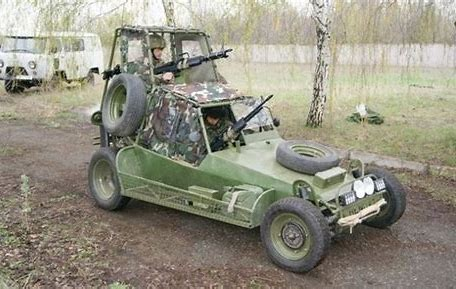

Russian engineers have been working on these new futuristic tanks that will change the art of warfare.
These new tanks are ultral light weight with a titanum and aluminum aloy frame they can cruise at a top speed of
five long sticks per second. It has a strength of 69 lama power coupled with its 150 warthog gun it strikes fear
into the hearts of it's enemys. former american scientist Leroy Jenkins said this about this new step
in technology"If we continue to advance in technology at this rate we might never be able to come back form
this curse upon man kind. The earth will become a barren waste land, devoid of life AAAAAAAAAAAAAAAAAAAAAAAAAAAAAAAAAAAAAAAAAAAAAAAAAAAAAAAAAAAAAAAAAAAAAAAAh..."
shortly after the interview Leroy Jenkins was found barely alive in an albanian forest.
